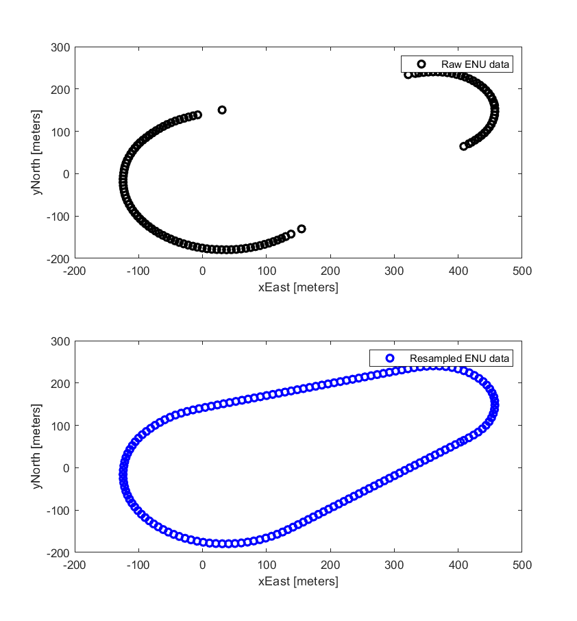

Presentations¶
Automatic generation of work zone simulation scenarios¶
The automatic generation of scenarios for simulation that follow the workflow as below:¶

The source file of this workflow diagram can be found here: https://drive.google.com/file/d/18G0Bb3WNbk9Mf6DgM548p8j4xtOKnf1m/view?usp=sharing
Scenarios defined in KMZ format are loaded into GIS software, such as Google Earth.¶
This contains all data for the CAD definition, but most of this is not needed within final road definition as per ASAM OpenDRIVE.
The KMZ definition is then parsed to KML, where coordinates are readable.¶
Using the KML data, we can plot all the scenarios with each other to identify common lane markers and road segments.¶

The driving lanes in LLA coordinates are then transformed into ENU coordinates. This uses the Cartesian coordinates to ease the creation of XODR definitions.
The ENU coordinates are then resampled for geometric smoothness and to avoid large gaps which cause problems with XODR formats.¶

The resampled ENU coordinates are then converted to XODR definition.¶

The XODR file is then editable to apply to different scenarios, for example, changing the lane width. Below shows an example of increasing the right driving lane width.¶

Lane width increased |
{kind=link}
{kind=link}
{kind=link}